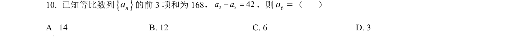
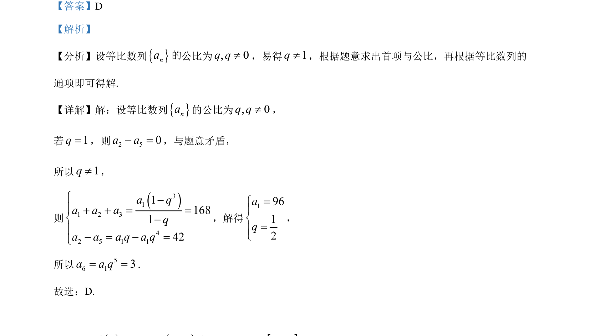

考点：等比数列 通项公式 方程求解

本题考查等比数列通项公式的应用，通过给定条件求解首项和公比，进而计算特定项。

📄 原 PDF 第 9 页：
素材/真题/吉林/2008-2024·（吉林）数学高考真题/2022年高考数学试卷（文）（全国乙卷）（解析卷）.pdf
【答案】D 【解析】 【分析】设等比数列{}na公比为, 0q q¹，易得1q¹，根据题意求出首项与公比，再根据等比数列的 通项即可得解. 【详解】解：设等比数列{}na的公比为, 0q q¹， 若1q=，则2 50a a- =，与题意矛盾， 所以1q¹， 则 ()311 2 342 5 1 11168142a qa a aqa a a q a qì-ï+ + = =í-ï- = - =î ，解得 19612aq=ìïí=ïî ， 所以 56 13a a q= =. 故选：D.